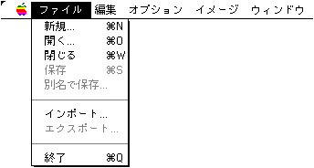
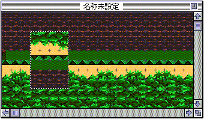
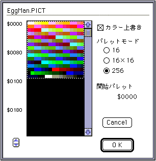

★Graphic Tools Guide
★MAP/SCREENエディタユーザーズマニュアル
★Graphic Tools Guide
★MAP/SCREENエディタユーザーズマニュアル
▲
戻る｜
進む▼
MAP/SCREENエディタユーザーズマニュアル
■ファイルメニュー

- ファイルの入出力等のファイル管理を行います。また、アプリケーションの終了もここで行います。
- ●新規...
- 新規ダイアログを表示し、新規にファイルを開きます。マップサイズ以外のパラメータは編集中に変更することができないので注意が必要です。

- マップサイズ
マップサイズをページ(1ページ=512×512ドット)単位で入力します。
- カラーモード
新規ファイルのカラーモードを指定します。
- パターンネームサイズ
新規ファイルのパターンネームサイズを指定します。
- ●開く...
- 既存の「SEGA2D」ファイルを読み込みます。
- ●閉じる
- 現在アクティブなウインドウを一時的に閉じます。
- ●保存
- 編集ファイルを、同名の「SEGA2D」形式で保存します。
- ●別名で保存...
- 編集ファイルを、別名の「SEGA2D」形式で保存します。
- ●インポート...
- 指定形式のイメージ(画像)ファイルを読み込み、イメージウインドウを開きます。キャラクタがパレットモードで編集されている場合、パレットを指定します。

- ◆カラー上書き
- 指定すると、イメージファイルの持つパレットデータを使用します。イメージファイルにパレットデータがない場合(フルカラー画像等)、最適なパレットを自動的に作成します。
指定しなかった場合、現在編集中のキャラクタのパレットデータを使用します。
- ◆パレットモード
- パレットモードを指定します。編集ファイルのカラーモードによって選択が制限されます。
- ◇16
- 編集ファイルが、16色モードの場合、選択できます。16色でイメージウインドウを開きます。
- ◇16×16
- 編集ファイルが、16色モードの場合、選択できます。
イメージファイルが1キャラクタあたり16色以内で複数パレットを考慮して作成されているものとみなして、イメージウインドウを開きます。
- ◇256
- 編集ファイルが、256色モードの場合、強制的に選択されます。256色でイメージウインドウを開きます。
- ●エクスポート...
- マップウィンドウの画像イメージを、指定形式のイメージファイルに保存します。保存は、1ページ単位で分割して行われます。
- ●終了
- アプリケーションを終了します。
▲
戻る｜
進む▼
★Graphic Tools Guide
★MAP/SCREENエディタユーザーズマニュアル
Copyright SEGA ENTERPRISES, LTD., 1997